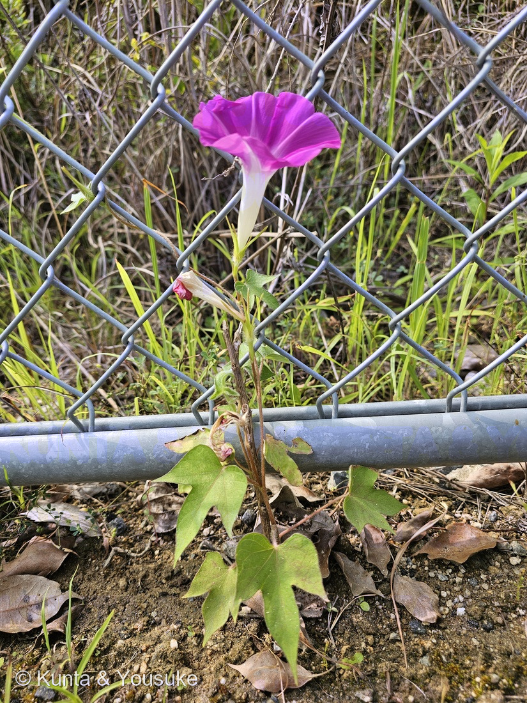
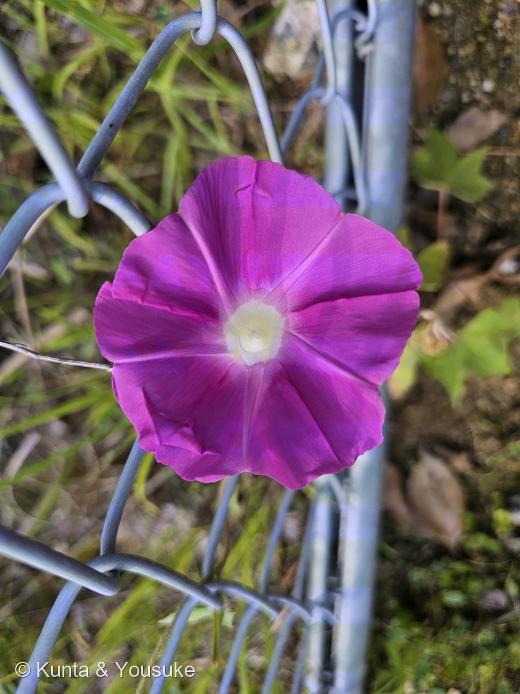
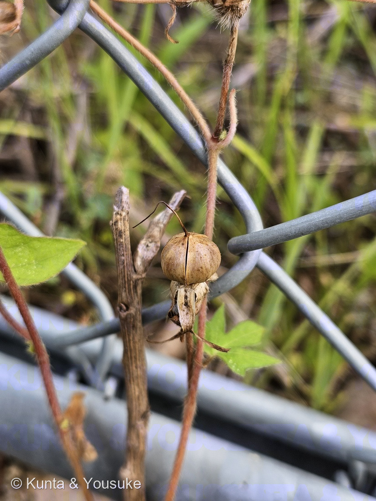
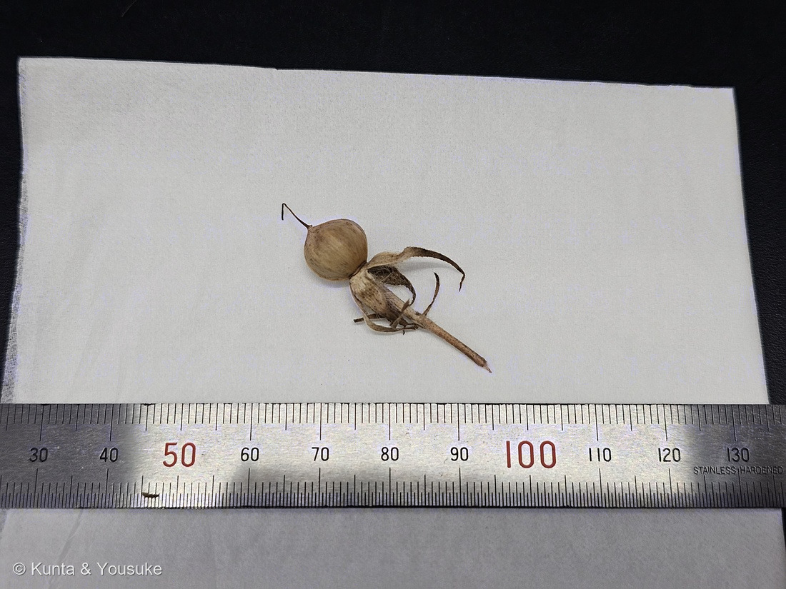
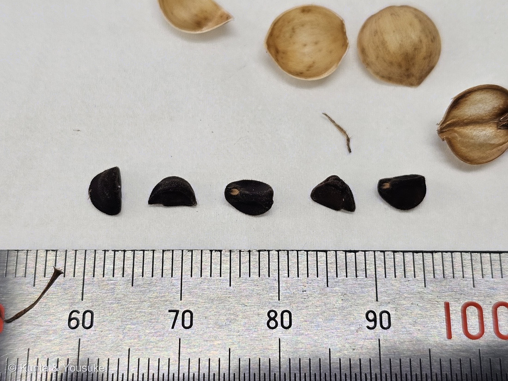

地図を読み込んでいるよ…
🔍 写真も地図も、押しているあいだ拡大して見られるよ（スマホは指を置いてすこし待ってね）。
🌍 の地図＝この子がもともと自生している場所を緑に。諸説ある子だよ。日本語版Wikipediaは「ヒマラヤかネパールから中国にかけての地域」または「熱帯アジア」とする説が有力だったが、近年は「熱帯アメリカ大陸が原産地である」とする説も出ている、とする。英語版Wikipediaは「Central America and Mexico」＝中央アメリカとメキシコとする。日本へは奈良時代の末に、遣唐使が種子を薬として持ち帰ったのが初めとされる。⚠だから、この地図は「いま有力なほう」を塗ってあるよ。
⭐じつは、はっきり決まっていない子だよ。日本語版Wikipediaは「ヒマラヤかネパールから中国にかけての地域」または「熱帯アジア」とする説が有力だったが、近年は「熱帯アメリカ大陸が原産地である」とする説も出ているとする。⭐英語版Wikipediaは「Central America and Mexico」＝中央アメリカとメキシコと書いている。⚠⚠だからこの緑は「いま有力なほう（熱帯アメリカ）」を塗ってある＝⭐むかしの図鑑を見ると、アジアが塗ってあるかもしれないよ。⭐⭐そして日本は塗っていない＝でも、この子が日本に来たのはとても古い＝奈良時代の末に、遣唐使が種子を「薬」として持ち帰ったのが初めとされる（日本語版Wikipedia）＝⭐1200年以上まえだよ。⭐⭐⭐そのあと日本で起きたことが、この子のいちばんすごいところ＝江戸時代に約1200系統もの「変化朝顔」が作られた＝⭐ふるさとは遠いけれど、いちばん深く遊んだのは日本の人たちだった。⭐ぼくらが会ったのは、通勤路の道ばたの金網フェンス＝りょうさんが撒いた種から育った子。⭐⭐同じヒルガオ科の仲間の原産地とくらべてみて＝012 アサガオと280 マルバルコウも熱帯アメリカ、106 マメアサガオは北アメリカ、005 ヒルガオだけが日本・東アジアの在来だよ＝⭐ヒルガオ科は、アメリカ生まれの子が多い科なんだね。⭐⭐おまけのサツマイモも、中央〜南アメリカ生まれ＝この緑の中から来て、いま世界じゅうの畑にいる。
⚠ 地図は国（日本と中国だけ県・省）までしか塗れないから、ほんとうの分布より広く見えていることがあるよ。地図はだいたいの場所。正確なところは、上の文を見てね。
アサガオ（朝顔・日本アサガオ）
Ipomoea nil (L.) Roth
別名 日本アサガオ 英名 Japanese morning glory ⭐種子は生薬で 牽牛子（けんごし・けにごし）
ヒルガオ科 · Convolvulaceae（サツマイモ属 Ipomoea・ナス目 Solanales）── ⭐図鑑で5人目のヒルガオ科（005 ヒルガオ・012 アサガオ・106 マメアサガオ・280 マルバルコウ）／⚠科は増えないので109科のまま
燻太さんの言葉「りょうさんが植えたアサガオ、果実が熟していたよ。長い雌しべの跡が残っているね。」「うまく熟した種子は5個。今から植えてみたら、また花を咲かせられるかな？」── ⭐⭐きびしい。でも鉢なら望みはある。⭐そしてまく前に「芽切り」を
⭐⭐⭐⭐ 名前と学名の由来 ── 「nil」は、アラビア語の「藍」
- ⭐⭐属名 Ipomoea＝ギリシャ語の ips（芋虫・ヒルガオのなかま）＋ homoios（似た）。つるが這って巻く姿からとされる（諸説）。⭐サツマイモ属の名前だよ。
- ⭐⭐⭐種小名 nil は、アラビア語の「藍（あい）・青」から。＝⭐つまり学名じたいが「青い花のヒルガオのなかま」と言っている。⚠でもこの子はマゼンタ。⭐それは、江戸の人たちが色を選びぬいてきたからなんだ（下の節へ）。
- ⭐命名は (L.) Roth＝もとはリンネが Convolvulus nil（セイヨウヒルガオ属）として記載し、のちに Roth が Ipomoea 属へ移した。⭐⭐著者名のカッコは「もとは別の属にいた」印＝279 ナシ・297 クロトンで覚えたとおりだね。
- ⭐⭐⭐日本には、花より先に「薬」として来た。──日本語版Wikipediaは「奈良時代末期に遣唐使がその種子を薬として持ち帰ったものが初め」とし、その種子を「牽牛子（けにごし、けんごし）」と呼んだ、とする。⭐下剤に使われたんだ。⚠だからぼくらは飲まないよ。
⭐⭐⭐⭐⭐ 燻太さんの問い ── 今から植えたら、また咲くかな？
- ⭐⭐燻太さんの言葉＝「うまく熟した種子は5個。今から植えてみたら、また花を咲かせられるかな？」
- ⭐⭐答えは「きびしい。でも鉢なら望みはある」。──NHK出版「みんなの趣味の園芸」がこう書いている。
- 種まきの適期＝5月中旬から下旬／発芽適温＝20〜25℃
- 開花期＝7月中旬〜10月上旬
- 耐寒性＝弱い
- ⭐いいほうの知らせ＝アサガオは短日植物。⭐⭐秋の、短くなっていく日は「花を咲かせろ」の合図としては味方なんだ。
- ⚠わるいほうの知らせ＝その合図が来るころには、寒さも一緒に来る。⭐この子は熱帯生まれで、寒さに弱い。
- ⭐⭐⭐だから、こうするといいと思う＝
- ⚠地面にじかにまく → たぶん間に合わない。
- ⭐⭐鉢にまいて、寒くなったら軒下や室内に入れる → 咲かせられるかもしれない。
- ⭐⭐⭐⭐⭐そしてもうひとつ、大事なこと。──採りたての種は、そのままだと芽がそろわない。⭐同じページにこう書いてある＝「タネは表皮が硬い（硬実種子という）ので、まく前に、タネのへそを傷つけないように注意してヤスリなどで種皮の一部を削っておきます」。
- ⭐これを「芽切り」というよ。⭐爪切りかヤスリで、白いへその点を避けて、種皮をほんの少し削る。
- ⭐⭐日本語版Wikipediaも「硬実種皮といって、種皮が硬く、水分を浸透させない」と書いている＝水にひたすだけでは足りないことがあるんだ。
⭐⭐⭐⭐ この植物のこと ── 江戸の1,200系統と、暗闇のスイッチ
- ⭐⭐⭐アサガオは、日本の園芸がいちばん深く遊んだ植物のひとつ。──日本語版Wikipediaは「ほとんどの変異は江戸時代に生まれたものである」とし、江戸時代には「約1200系統が作られた」とする。⭐あの「変化朝顔」だね。
- ⭐⭐⭐そして花をひらくスイッチは、光ではなく「暗闇」なんだ。──日本語版Wikipediaは「暗闇の時間が短いと、開花する時刻は大幅に遅れる。」「暗闇がいっさい与えられなければ、ツボミは開かない。」と書く。
- ⭐⭐つまり「朝顔」は朝の光で開いているのではない。⭐前の晩の暗さを数えて、そこから時間をはかって開いているんだ。
- ⭐写真①②は朝9時18分。⭐まだしっかり開いていた＝その日の夜明けから逆算すると、ちょうどよい時間だったんだね。
- ⭐⭐果実のつくり＝子房は3室、各室に胚珠が2つ＝⭐満点は6個。⭐燻太さんの「6個がよくある印象」は、そのとおりだったよ。⭐今回の5個は「1つ実らなかった」ということ。
- ⭐写真③の、果実の上にぴょんと立っている細い針＝⭐⭐あれが花柱（めしべ）の跡。⭐花がしぼんだあとも残って、実が熟すまでついているんだ。⭐燻太さんが「長い雌しべの跡が残っている」と言ったの、まさにそれだよ。
⭐⭐⭐⭐⭐ 同定について ── 定規で決めた
- ⭐⭐この子は、写真に写った定規から測って決めたよ。⭐名札の無い子で、ここまで数字で押せたのははじめて。
- さく果の直径 りょうさんの子＝約9.5mm ／ 記載＝8〜10mm（三河の植物観察）・8〜12mm（英語版Wikipedia）
- 種子の長さ ＝約5.1mm（5個とも4.7〜5.1） ／ 記載＝5〜6mm
- 萼片の長さ ＝約1.7〜2.0cm ／ 記載＝1〜2.5cm
- 萼片の形 ＝線形にとがり、外側に長い毛が開出 ／ 記載＝「外側に剛毛が開出し…線形の尖った先端をもつ」
- 葉 ＝はっきり3裂 ／ 記載＝「縁は全縁又は±3(又は5)裂」
- ⚠⚠似た子を落とせたか、も確かめたよ（⭐087 ヤマモモで覚えた「合っている数を数えない。他を落とせたかで考える」）。
- ⭐⭐マルバアサガオ I. purpurea → 萼で落ちた＝あちらは萼裂片が鋭角三角形に近く、先が短い。⭐この子は線形に長く伸びている。
- ⭐⭐アメリカアサガオ I. hederacea → 花の大きさと萼の先で落ちた＝あちらは花冠が直径3〜4cmと小さく、萼片の先が管状に反り返る。⭐この子の花は大きく、先はほとんど反曲していない。
- ⭐⭐⭐そして、いちばん強い証拠は燻太さんの一言＝「りょうさんが撒いた種から育ったアサガオ」。⭐＝園芸のアサガオ。⭐⭐088 イキシアで教わったとおり、現場を見た人の証言は一次資料だよ。
⚠⚠⚠ 012 のアサガオとの関係 ── まだ決めていないこと
- ⚠⚠⚠012 アサガオは、この子とは別の子だと思う。
- 012＝青むらさきの花・切れこまないハート形の葉・さびた鉄柵（ページには「葉が丸いハート形（切れ込まない）→マルバアサガオ（I. purpurea）と見られる」と書いてある）
- 299＝マゼンタの花・はっきり3裂した葉・新しい金網フェンス
- ⏳⭐⭐⭐だから、ほんとうは012の和名と同定も見なおしたほうがいい。⚠でも今日は、まずこの子を登録することだけにした（2026-08-28に燻太さんが決めた）。⭐012をどうするかは、宿題に置いてあるよ。
- ⭐図鑑には、こういう「同じ名前の兄弟ページ」の前例がある＝073 トクサ（大型種）・195 トクサのなかま・208 トクサ（砥草・木賊）の3人。⭐だから、あわてなくて大丈夫。
出典：日本語版Wikipedia「アサガオ」（Ipomoea nil (L.) Roth (1797)／ヒマラヤかネパールから中国にかけての地域、または熱帯アジア／近年は熱帯アメリカ大陸が原産地であるとする説／奈良時代末期に遣唐使がその種子を薬として持ち帰ったものが初め／牽牛子（けにごし、けんごし）／硬実種皮といって、種皮が硬く、水分を浸透させない／暗闇の時間が短いと、開花する時刻は大幅に遅れる／暗闇がいっさい与えられなければ、ツボミは開かない／ほとんどの変異は江戸時代に生まれたものである／約1200系統が作られた／葉は広三尖形で、ふつう3裂するが、まれに分裂しないものもある）／英語版Wikipedia「Ipomoea nil」（Ipomoea nil (L.) Roth, basionym Convolvulus nil L.／Central America and Mexico／almost spherical to spherical capsule fruits with a diameter of 8 to 12 mm／leaves ovate to almost circular, 5 to 14 cm long, entire or lobed three to five times）／三河の植物観察「アサガオ Ipomoea nil」（葉身は広卵形～ほぼ円形、長さ4～15㎝X幅4.5～14㎝、微細剛毛があり、基部は心形、縁は全縁又は±3(又は5)裂／咢片は披針形、ほぼ等長、長さ1～2.5㎝、外側に剛毛が開出し、先はほぼ無毛、線形の尖った先端をもち、毛の基部が膨れる／花冠は淡青色～明るい青色、花冠筒部は帯白色、古くなるとピンク色に退色し、漏斗形、長さ5～6(～8)㎝、無毛／蒴果はわら色、卵形～±球形、直径8～10㎜、無毛。種子は黒色、卵状三稜形、長さ5～6㎜／アサガオでは咢裂片の先がほとんど反曲せず線形に長く伸び、花冠は直径約5～8cmと大きいのに対して、アメリカアサガオは咢裂片の先は管状で反り返り、花冠は直径3～4cmとやや小さい／マルバアサガオでは咢裂片が鋭角三角形にやや近く先が短く、葉が厚い）／NHK出版「みんなの趣味の園芸」アサガオ（まく時期は、5月中旬から下旬／発芽適温が20～25℃なので早まきは禁物／開花期 7月中旬～10月上旬／タネは表皮が硬い（硬実種子という）ので、まく前に、タネのへそを傷つけないように注意してヤスリなどで種皮の一部を削っておきます／短日植物であるため、夜間に照明が当たらないように注意しましょう／耐寒性 弱い）／日本植物生理学会「みんなのひろば 植物Q&A」（アサガオの子房は3つの子房室からなり、各子房室には2つの胚珠がつくられる＝子房には6つの胚珠がある）／タキイ種苗「サツマイモ 野菜栽培マニュアル」ほか（サツマイモは高温短日性で、本州では日が短くなるころには気温が下がるため開花しにくい）。⭐さく果の直径・種子の長さ・萼片の長さは、写真④⑤に写っている定規から、ぼくが画素をかぞえて出した実測値だよ（1mm＝35px／76px）。